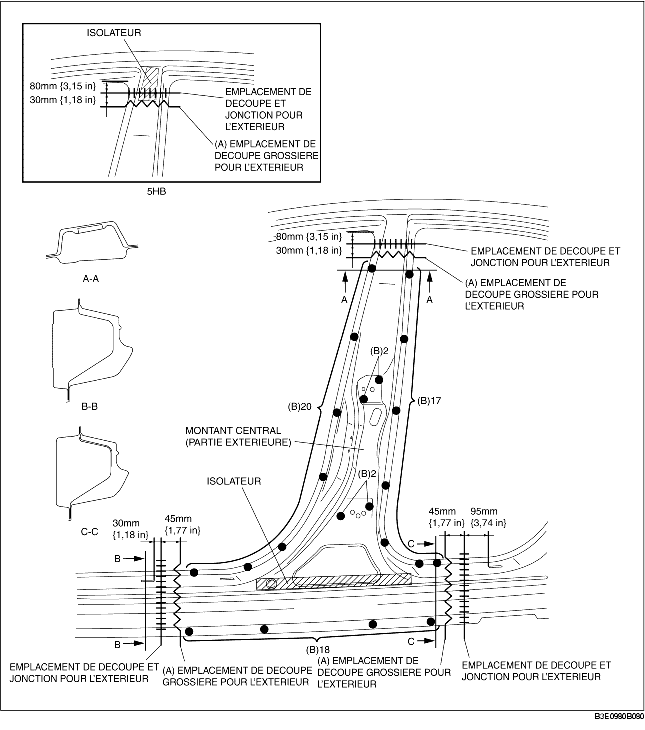
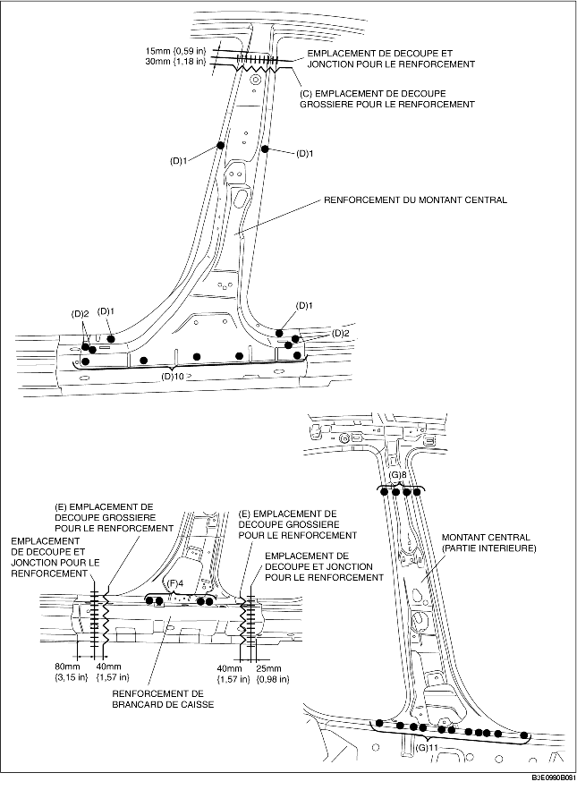

1. Découper grossièrement la zone (A), percer aux 59 emplacements de soudure indiqués par (B) puis déposer la partie extérieure du montant central.
2. Découper grossièrement la zone (C), percer aux 18 emplacements de soudure indiqués par (D) puis déposer le renforcement du montant central.
3. Découper grossièrement la zone (E), percer aux 4 emplacements de soudure indiqués par (F) puis déposer le renforcement du longeron.
4. Percer aux 19 emplacements indiqués (G) et déposer le montant central (intérieur).

